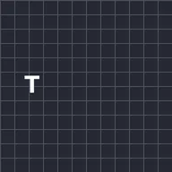
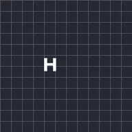
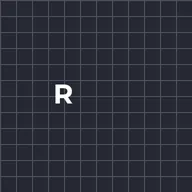
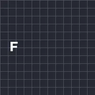
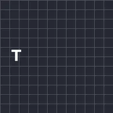

Bip del testo

Digita il testo lettera per lettera con un breve bip per ogni lettera, come un personaggio che parla in un gioco. Scegli una voce, poi imposta l'intonazione, la velocità di digitazione e la durata della pausa dopo la punteggiatura. Spazi e punteggiatura restano muti.
Text Blips scrive il testo lettera per lettera e riproduce un breve suono per ogni lettera, come un personaggio che parla in un gioco. I suoni sono creati dall'app stessa e si riproducono insieme agli altri suoni del progetto, nell'anteprima e nell'esportazione.
- Voce è Classica, Morbida, Profonda, Acuta, Robot, Squittio, Macchina da scrivere o Chiptune. Intonazione la alza o la abbassa in semitoni, e Variazione intonazione rende ogni suono un po' diverso. Seme dà un altro schema di toni.
- Velocità è quante lettere vengono scritte al secondo. Bip ogni riproduce un suono su ogni lettera, su una lettera ogni due e così via.
- Spazi e punteggiatura sono silenziosi. Pausa punteggiatura attende dopo . , ! ? ; e : prima della lettera successiva.
- Ritardo attende prima che la scrittura inizi. Disattiva Digitazione per mostrare subito tutto il testo e tenere solo il suono.
- Volume imposta quanto sono forti i suoni.
I preset Eroe, Mostro, Robot, Chiacchierone e Macchina da scrivere sono un inizio rapido.
Impostazioni
| Impostazione | Tipo | Intervallo | Predefinito |
|---|---|---|---|
| Voce | Scelta | Classica, Morbida, Profonda, Acuta, Robot, Squittio, Macchina da scrivere, Chiptune | Classica |
| Volume | Numero | Da 0% a 100% | 60% |
| Intonazione | Numero | Da -24 st a 24 st | 0 st |
| Variazione intonazione | Numero | Da 0 st a 12 st | 1 st |
| Velocità | Numero | Da 1 /s a 120 /s | 30 /s |
| Bip ogni | Numero | Da 1 a 8 | 1 |
| Pausa punteggiatura | Numero | Da 0 s a 3 s | 0.25 s |
| Ritardo | Numero | Da 0 s a 3600 s (al massimo la lunghezza del livello) | 0 s |
| Digitazione | Attivo o disattivo | – | Attivo |
| Seme | Numero | Da 0 a 1000 | 1 |
Preset
Scegline uno dalla pagina dei dettagli dell'effetto nella Libreria effetti. Ognuno è un'impostazione già pronta che puoi continuare a modificare.

Eroe- Mostro

Robot
Parlantina
Macchina da scrivere